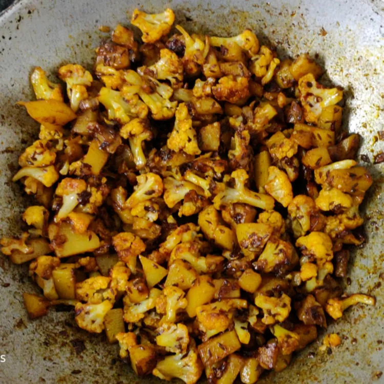

Potato Fry

Potato fry with cauliflower makes a beautiful combination with its spice.
Ingredients
- potatoes(3-4) medium size
- one cauliflower
- turmeric powder
- mirchi powder
- oil(sunflower)
- jeera
Steps
- first clean the potatoes and cauliflower to remove any dust particles on it.
- then peel off the potatoes and wash it again.
- slice/cut the potatoes into small pieces and then the cauliflower also.
- on the gas stove take a bowl and heat the oil.
- when the oil is sufficiently heated put the potato and cauliflower pieces in the bowl and let iit fry until it's color turns to light brown.
- when the color changes off the gas stove and put some mirchi powder and turmeric powder and also add some jeera and mix it well.